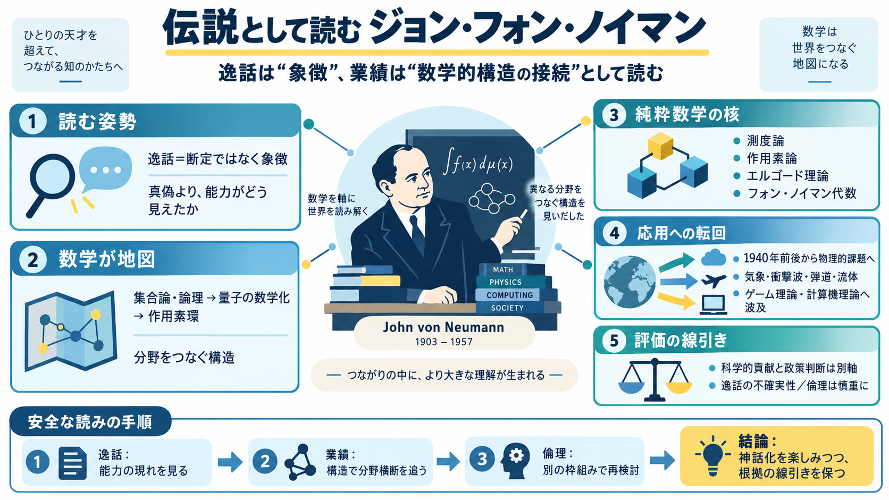

John von Neumann – Wikipédia, a enciclopédia livre
Title: John von Neumann – Wikipédia, a enciclopédia livre + 8.1 Hábitos de trabalho. # John von Neumann. (Redirecionado …

Title: John von Neumann – Wikipédia, a enciclopédia livre + 8.1 Hábitos de trabalho. # John von Neumann. (Redirecionado …
john von neumann János Neumann was a Hungarian mathematician of Jewish origin. Born on the 28th of December, in 1903, …
Title: John von Neumann - Vicipéid # John von Neumann. | Cuir in eagar ar Wikidata |. | Ainm sa teanga dhúchais | (hu) m…
Title: John von Neumann - Policonomics # John von Neumann. John von NeumannJohn von Neumann 1903-1957, was a Hungarian-b…
John von Neumann, (December 28, 1903 – February 8, 1957) a Hungarian-born American mathematician. Beside his contribu…